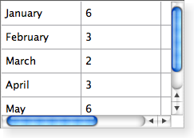

| Home · All Classes · Modules · QSS HELP · QSS 案例 · VER007 HOME |
在QTableView中的类提供了默认的模型/视图实现表视图中。More...
通过继承QTableWidget。
在QTableView中的类提供了默认的模型/视图实现表视图中。
一个QTableView中实现了显示从模型项目的表视图。这个类是用来提供以前由提供的标准表QTable类，但使用Qt的模型/视图结构中提供的更灵活的方法。
在QTableView中类是一个Model/View Classes并且是Qt的一部分model/view framework。
QTableView中实现由定义的接口QAbstractItemView类以允许其显示由从派生模型提供数据QAbstractItemModel类。
您可以通过点击一个单元格，用鼠标，或者使用箭头键导航的单元格在表中。因为QTableView中启用tabKeyNavigation默认情况下，你也可以按下Tab键和BACKTAB移动从细胞到细胞。
该表具有可利用以下方式获得一个垂直头中的verticalHeader（）函数，和一个水平标头，可通过horizontalHeader（）函数。表中的每一行的高度可以通过使用被发现rowHeight（）;类似地，列的宽度可以通过使用发现columnWidth（ ） 。由于这两个都是普通的小工具，你可以使用隐藏其中任何一个的hide（）函数。
行和列可以隐藏和显示hideRow（ ）hideColumn（ ）showRow（）和showColumn（ ） 。它们可以与被选择selectRow（）和selectColumn（ ） 。该表将显示一个网格取决于showGrid属性。
在表视图中显示的项目，像那些在其他项目的意见，被渲染并使用标准编辑delegates。然而，对于某些任务它能够插入部件中的表而不是有时是有用的。 Widget是针对特定的索引设置与setIndexWidget()功能，后来与检索indexWidget()。
 |
By default, the cells in a table do not expand to fill the
available space.
可以通过拉伸最后一个头部分使细胞填满可用空间。通过访问相关的头horizontalHeader（）或verticalHeader（）和set头的stretchLastSection属性。 要根据每列或行的空间需求分配的可用空间，调用视图的resizeColumnsToContents（）或resizeRowsToContents（）函数。 |
对于一些特殊形式的表它能够以行和列索引和widget的坐标之间的转换是非常有用的。该rowAt（）函数提供的指定行的视图中的y坐标;行索引可以被用来获取一个对应的y坐标rowViewportPosition（ ） 。该columnAt（）和columnViewportPosition（）函数提供x坐标和列索引之间的等效转换操作。
QTableView中适当称呼为每个平台。下图显示它的外观在三个不同的平台。转到Qt Widget Gallery看到它在其他样式的外观。
 |
 |  |
| A Windows XP style table view. | A Macintosh style table view. | A Plastique style table view. |
该parent的说法，如果不是没有，原因self通过Qt的，而不是PyQt的拥有。
构造一个表格视图parent来表示数据。
See also QAbstractItemModel。
删除所有的行和列跨度的表格视图。
此功能被引入Qt的4.4 。
See also setSpan（ ） 。
返回该塔，在其中给定的x坐标，x在内容坐标系的位置。
Note:该函数返回-1，如果给定的坐标是无效的（无柱） 。
See also rowAt（ ） 。
这种方法也是一个Qt槽与C + +的签名void columnCountChanged(int,int)。
这个槽被调用时列添加或删除。由指定的列以前的数oldCount，由指定的列的新号码newCount。
这种方法也是一个Qt槽与C + +的签名void columnMoved(int,int,int)。
这个槽被调用来改变给定的索引column在表视图。旧索引由指定oldIndex，并且由新的索引newIndex。
See also rowMoved（ ） 。
这种方法也是一个Qt槽与C + +的签名void columnResized(int,int,int)。
这个槽被调用来改变给定的宽度column。旧的宽度由规定oldWidth，并且由新的宽度newWidth。
See also rowResized（ ） 。
返回table元素的列跨度为（row，column） 。默认值是1 。
这个函数中引入了Qt 4.2中。
See also setSpan（）和rowSpan（ ） 。
返回给定的内容中x坐标坐标column。
返回给定的宽度column。
See also setColumnWidth（ ）resizeColumnToContents（）和rowHeight（ ） 。
从重新实现QAbstractItemView.currentChanged（ ） 。
这种方法也是一个Qt槽与C + +的签名void hideColumn(int)。
隐藏指定column。
See also showColumn（）和hideRow（ ） 。
这种方法也是一个Qt槽与C + +的签名void hideRow(int)。
隐藏指定row。
See also showRow（）和hideColumn（ ） 。
返回表视图的水平标题。
See also setHorizontalHeader（ ）verticalHeader（）和QAbstractItemModel.headerData（ ） 。
从重新实现QAbstractItemView.horizontalOffset（ ） 。
返回水平在表视图中的项目所抵销。
请注意，表视图使用水平标题部分的位置来确定的列在视图中的位置。
See also verticalOffset（ ） 。
从重新实现QAbstractItemView.indexAt（ ） 。
返回相应的模型项的索引位置在位置表项目pos在内容坐标。
返回True如果给定的column被隐藏，否则返回False 。
See also isRowHidden（ ） 。
从重新实现QAbstractItemView.isIndexHidden（ ） 。
返回True如果给定的row被隐藏，否则返回False 。
See also isColumnHidden（ ） 。
从重新实现QAbstractItemView.moveCursor（ ） 。
移动光标按照给定的cursorAction使用由所提供的信息modifiers。
See also QAbstractItemView.CursorAction。
从重新实现QWidget.paintEvent（ ） 。
绘制表格收据上给定的油漆事件event。
这种方法也是一个Qt槽与C + +的签名void resizeColumnsToContents()。
重新调整的基础上用来呈现在列的每个项目委讬的大小暗示的所有列。
这种方法也是一个Qt槽与C + +的签名void resizeColumnToContents(int)。
调整大小给定的column根据用于呈现列中每个项目委讬的大小的提示。
Note:唯一可见的列将被调整。重新实现sizeHintForColumn（ ）调整隐藏的列也是如此。
这种方法也是一个Qt槽与C + +的签名void resizeRowsToContents()。
重新调整的基础上用来渲染中的行的每个项目委讬的大小暗示的所有行。
这种方法也是一个Qt槽与C + +的签名void resizeRowToContents(int)。
调整大小给定的row基于用于渲染的行中的每个项目委讬的大小的提示。
返回该行中给定的y坐标，y在内容坐标系的位置。
Note:该函数返回-1，如果给定的坐标是无效的（没有行） 。
See also columnAt（ ） 。
这种方法也是一个Qt槽与C + +的签名void rowCountChanged(int,int)。
这个槽被调用时行添加或删除。由指定的行之前的数oldCount，并且通过指定的行数的新newCount。
返回给定的高度row。
See also setRowHeight（ ）resizeRowToContents（）和columnWidth（ ） 。
这种方法也是一个Qt槽与C + +的签名void rowMoved(int,int,int)。
这个槽被调用来改变给定的索引row在表视图。旧索引由指定oldIndex，并且由新的索引newIndex。
See also columnMoved（ ） 。
这种方法也是一个Qt槽与C + +的签名void rowResized(int,int,int)。
这个槽被调用来改变给定的高度row。旧的高度由指定oldHeight，和新的高度由newHeight。
See also columnResized（ ） 。
返回表元素的行间距为（row，column） 。默认值是1 。
这个函数中引入了Qt 4.2中。
See also setSpan（）和columnSpan（ ） 。
返回给定的内容中y坐标坐标row。
这种方法也是一个Qt槽与C + +的签名void selectColumn(int)。
选择给定的column在表视图，如果当前SelectionMode和SelectionBehavior允许选择的列。
See also selectRow（ ） 。
从重新实现QAbstractItemView.selectedIndexes（ ） 。
从重新实现QAbstractItemView.selectionChanged（ ） 。
这种方法也是一个Qt槽与C + +的签名void selectRow(int)。
选择给定的row在表视图，如果当前SelectionMode和SelectionBehavior允许选择的行。
See also selectColumn（ ） 。
If hide是真正的给定column将被隐藏，否则将被显示。
See also isColumnHidden（）和setRowHidden（ ） 。
设定的给定的宽度column要width。
这个函数是Qt 4.1中引入。
See also columnWidth（ ） 。
该header说法有它的所有权转移给Qt的。
设置部件用于在水平标头header。
See also horizontalHeader（）和setVerticalHeader（ ） 。
从重新实现QAbstractItemView.setModel（ ） 。
从重新实现QAbstractItemView.setRootIndex（ ） 。
设定的给定的高度row要height。
这个函数是Qt 4.1中引入。
See also rowHeight（ ） 。
If hide是真的row将被隐藏，否则会被显示。
See also isRowHidden（）和setColumnHidden（ ） 。
从重新实现QAbstractItemView.setSelection（ ） 。
选择在给定的项目rect并按照指定的选择flags。
从重新实现QAbstractItemView.setSelectionModel（ ） 。
设置表格单元的跨度为（row，column），以通过（指定的行和列的数量rowSpanCount，columnSpanCount） 。
这个函数中引入了Qt 4.2中。
See also rowSpan（）和columnSpan（ ） 。
该header说法有它的所有权转移给Qt的。
设置部件用于在垂直头header。
See also verticalHeader（）和setHorizontalHeader（ ） 。
这种方法也是一个Qt槽与C + +的签名void showColumn(int)。
显示给定的column。
See also hideColumn（）和showRow（ ） 。
这种方法也是一个Qt槽与C + +的签名void showRow(int)。
显示给定的row。
See also hideRow（）和showColumn（ ） 。
从重新实现QAbstractItemView.sizeHintForColumn（ ） 。
返回尺寸暗示对于给定的column的宽度或-1 ，如果没有模型。
如果你需要一个给定列的宽度设置为一个固定值，调用QHeaderView.resizeSection（ ）在桌子上的水平标题。
如果在子类中重新实现这个功能，请注意您返回值时，将使用resizeColumnToContents（）或QHeaderView.resizeSections（）被调用。如果一个较大的列宽是必需的任何一方的横头或项目的委讬，较大的宽度将被代替使用。
See also QWidget.sizeHint和horizontalHeader（ ） 。
从重新实现QAbstractItemView.sizeHintForRow（ ） 。
返回尺寸暗示对于给定的row的高度或-1 ，如果没有模型。
如果你需要一个给定的行的高度设置为一个固定值，调用QHeaderView.resizeSection（ ）在桌子上的垂直标题。
如果在子类中重新实现这个功能，请注意您返回值时只使用resizeRowToContents（）被调用。在这种情况下，如果一个较大的行高是必需的任何一方向垂直头或项目委讬时，该宽度将被代替使用。
See also QWidget.sizeHint和verticalHeader（ ） 。
这种方法也是一个Qt槽与C + +的签名void sortByColumn(int)。
通过在给定的值进行排序的模型column在给定的order。
这个函数中引入了Qt 4.2中。
See also sortingEnabled。
从重新实现QObject.timerEvent（ ） 。
从重新实现QAbstractItemView.updateGeometries（ ） 。
返回表视图的垂直插头。
See also setVerticalHeader（ ）horizontalHeader（）和QAbstractItemModel.headerData（ ） 。
从重新实现QAbstractItemView.verticalOffset（ ） 。
返回垂直的表视图中的项目所抵销。
请注意，表视图使用垂直标题部分的位置来确定的行视图的位置。
See also horizontalOffset（ ） 。
从重新实现QAbstractItemView.viewOptions（ ） 。
| PyQt 4.10.3 for X11 | Copyright © Riverbank Computing Ltd and Nokia 2012 | Qt 4.8.5 |